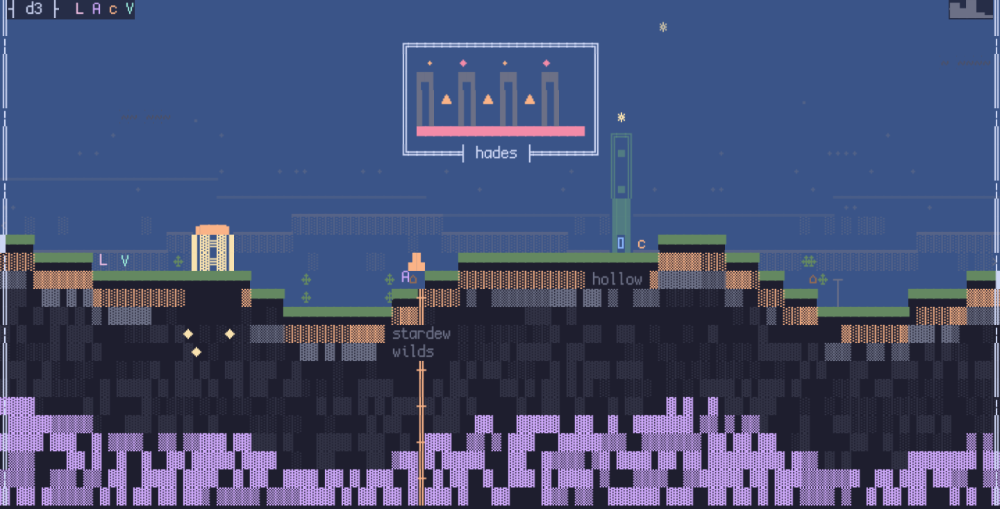
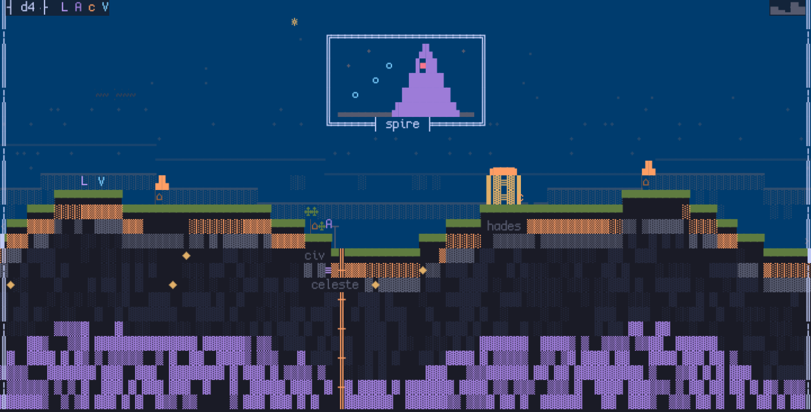
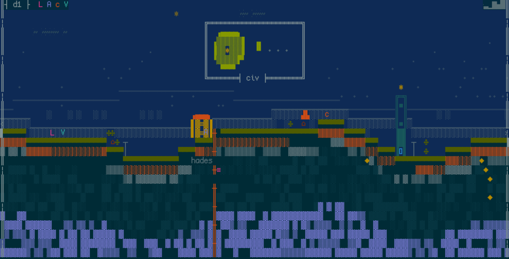
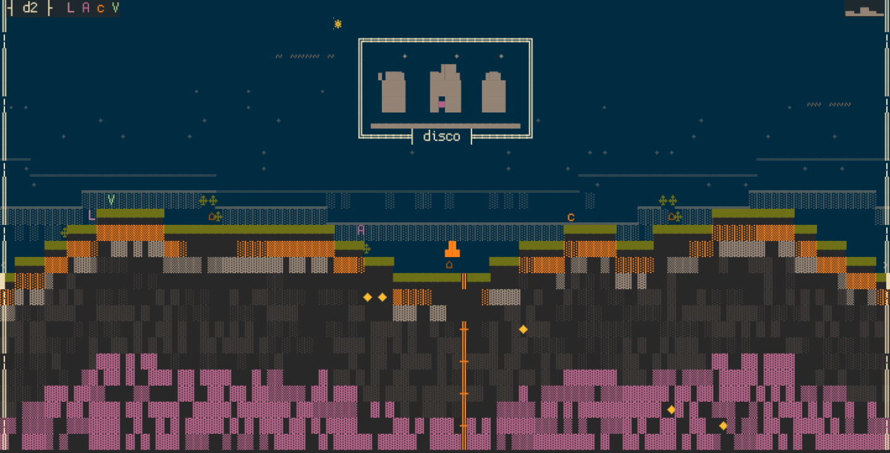
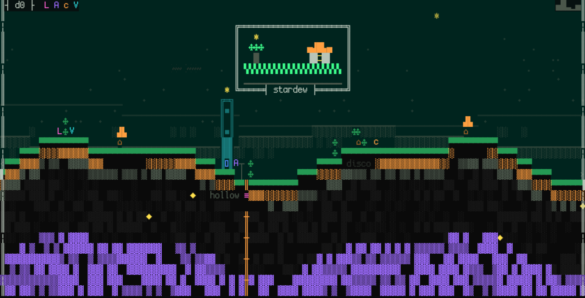
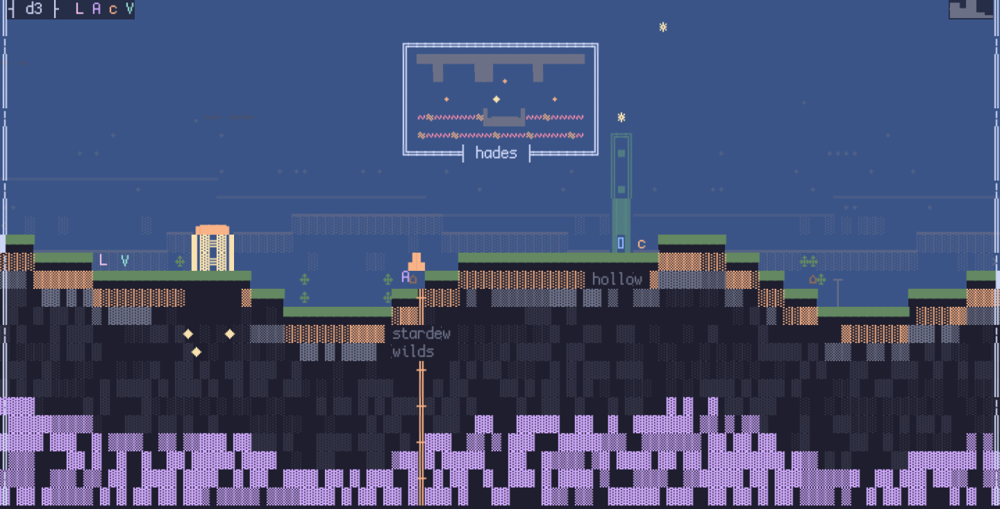
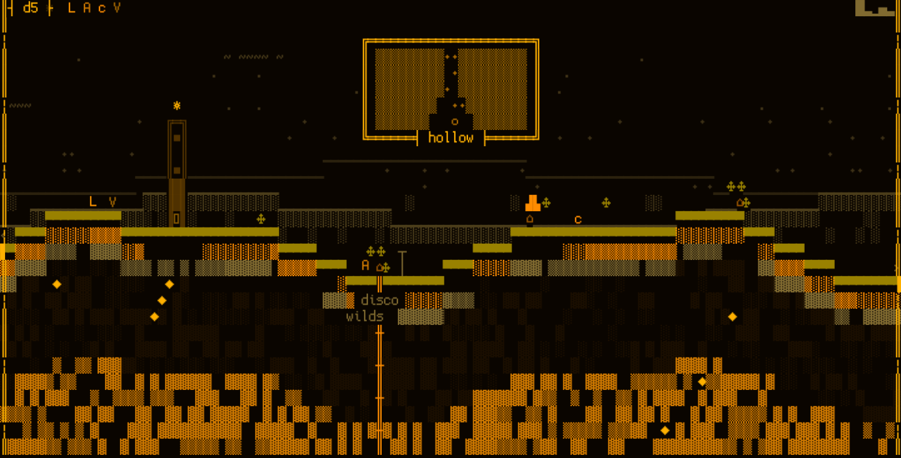

2026-08-23 · claude-authoring rung 1, taste bar 4a · seven authored murals, shuffled.
Some are the shipped seed corpus; some came from the context-cold stranger-agent run. Which is which
is sealed in 2026-08-23-mural-blind-ab.key.md: answer first, open it after.






